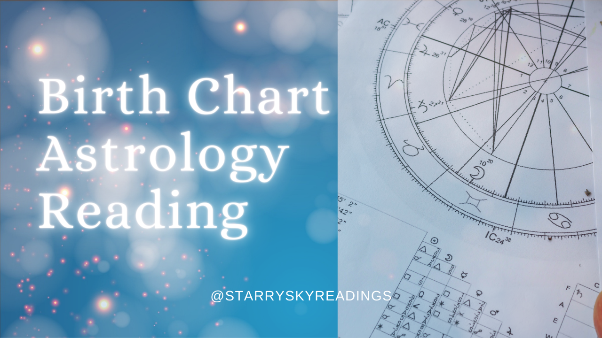
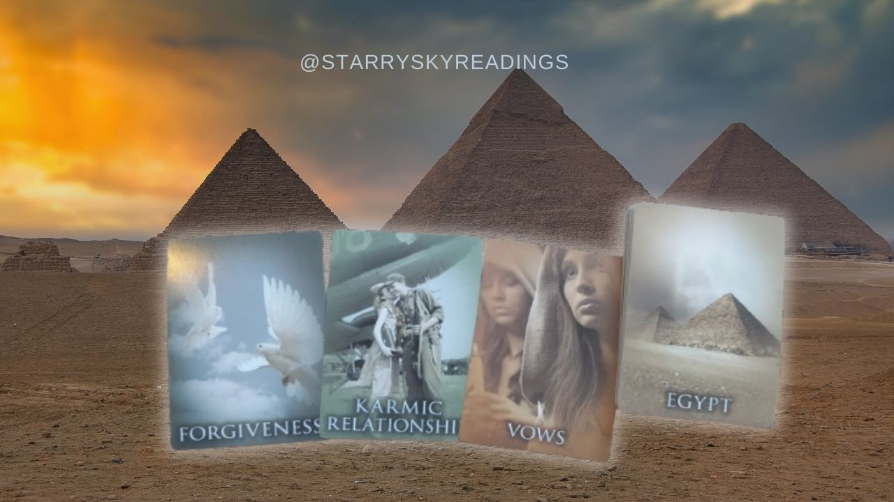
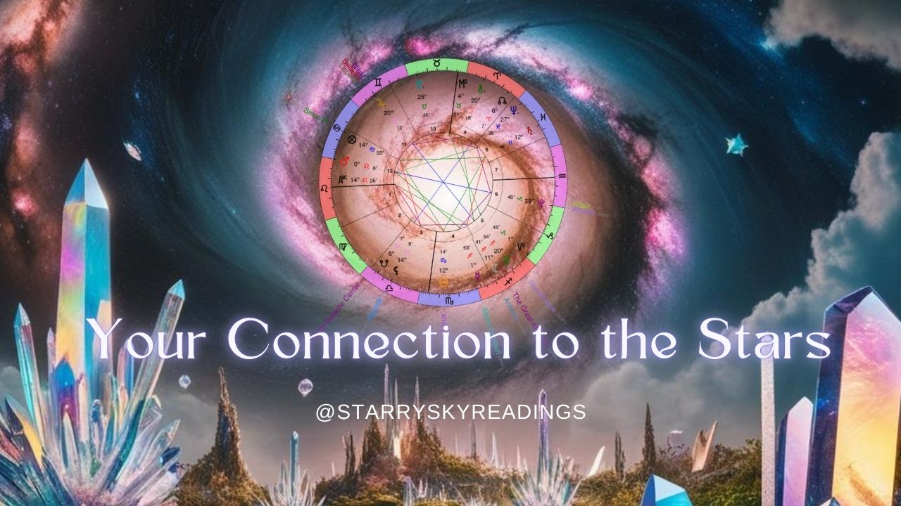
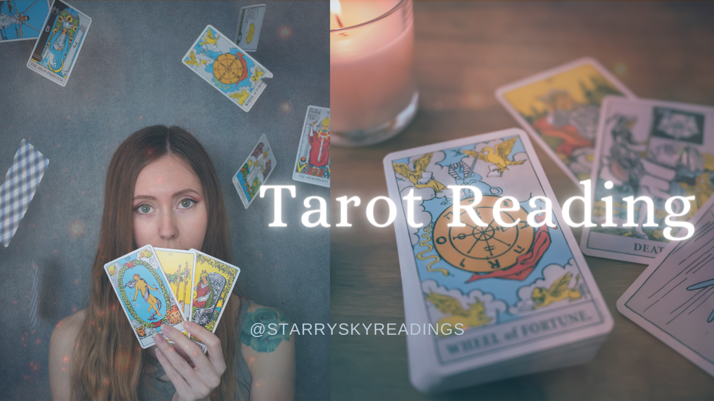

Testimonials
Readings
Birth Chart Astrology Reading
What Makes You "You"!
Written PDF report covering all your planets, major alignments and any other notable aspects I see. Covers your love life, career calling, life path, wounds to heal, etc.
Your choice of Pre-Recorded Video or a Live Recorded 60 min. Video Call (Zoom or Skype) £90 / $120
Book by Email: Starryskyreadings@gmail.com

Earth Past Life Reading
Your Most Significant Past Life here on Earth - What Can you Learn from it?
Written Astrology Report PDF, Past Life Card Video Reading, and Live Recorded 60 min. Video Call (Zoom or Skype) - £111 / $150
Mini Reading - 3 Past Life Cards Only, Recorded Video shared through Link - £20 / $25
Book by Email: Starryskyreadings@gmail.com

Galactic Astrology Soul Reading
Your Soul Incarnations in Galactic Realms - What was your Experiences there?
Covers Your Soul’s "Origins" & Most Recent Incarnations Before Earth. Includes Star Connections that aren't past lives also.
Written Astrology Report min. 12+ Page PDF, Past Life Card Reading Video on each Star Connection, and Live Recorded 75 min. Zoom Video Call - £122 / $170
Mini Reading - A look at just your Most Recent Life Off-Planet with 3 Past Life Cards and short Written Report PDF - £25 / $30
Book by Email: Starryskyreadings@gmail.com

Tarot Reading
Get Guidance on Your Situation
Mini Reading - 3 Cards + 1 Oracle Card - 10-20 min. Video Link
£10 / $12
Full Reading - 6 Cards + 1 Outcome Card + 1 Oracle Card
- 20-30 min. Video Link
- £30 / $40
Extensive Reading - 9 Cards + 1 Outcome Card + 2 Oracle Cards
- 35-45 min. Video Link
- £50 / $60
Book by Email: Starryskyreadings@gmail.com

My Journey
I am a professional Intuitive Astrologer, Certified Galactic Soul Guidance Astrologer, and experienced Tarot Reader.
I can give insightful guidance to all areas of your life including love, career, family, healing, and your life path. I can also look into your past life/lives and see what karma or ancestral patterns you need to heal in this current lifetime.
I was trained through Julia Balaz' Quantum Soul Guidance Program
JuliaBalaz.comTo Become a Practioner like me, you can register here , or to learn Galactic Astrology 101, register here .
Specialising in Past Life Readings
Perhaps you’ve had that feeling of “missing home” as I have - let’s define what that means for you and I’ll guide you here in your NEW home here on Earth. As an Intuitive Galactic Astrologer, I’ll guide you through your soul’s past life journey. Your experiences from the past often mirror the experiences you currently face. Through this in-depth look, we can explore not only the wonderful insights of your past lives, but you can receive the confirmation within you of better understanding yourself and the lessons to learn from them.
As an experienced Intuitive Tarot Reader, I utilize Divination with Past Life Oracle cards to pull even more details about your past lives. This only brings more accuracy to my Galactic Astrology findings.
My goal is to bring you that confirmation you know deep within your subconscious, by accessing your soul memories and to help you on your path forward in this current life.
My Background
In 2019, I had what I would call a "Dark Night of the Soul" experience as psychologist Carl Yung would call it. I slowly began to feel myself getting guided to a spiritual path. By early 2020, I decided to utilize my intuitive abilities and started offering my tarot and oracle reading services on Fiverr and Instagram. Currently, I have over 140+ 5-star reviews from my lovely connections on Fiverr. I always knew I wanted to do more than just tarot so I could better help people especially those who felt lost like I once did. I've always had a love for Astrology since I was a teenager, looking at horoscope books in the library for the coming months and year. I did birth chart reports for fun for family, friends, and even co-workers. By 2023, I finally began to study it more seriously through my own grandmother Caitlin's course. I quickly started to accurately read many different birth charts and even past lives. Not long after, I also enrolled in Julia Balaz' Galactic Astrology QSG Practioner Course. I've now become a Certified Galactic Astrologer since June 2024.
I enjoy getting to make Youtube videos on the Astrology and also doing videos with my Grandmother Caitlin called "Heart to Heart Astrology Podcast" on Youtube - Tune In Here!
With these readings, I'm here now to give you spiritual guidance on this human journey. May you find deep confirmations and synchronicities through your personal reading. 💖
email to Book:
starryskyreadings@gmail.com

Contact me to Book
Starry Sky Readings© 2024
Astrology & Tarot
starryskyreadings@gmail.com
website
www.starryskyreadings.com